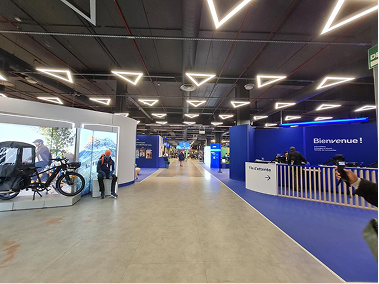
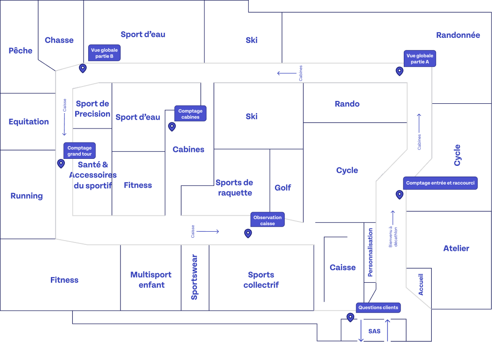
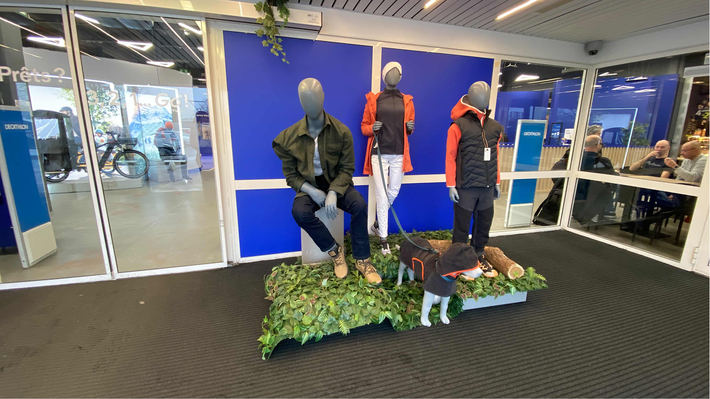
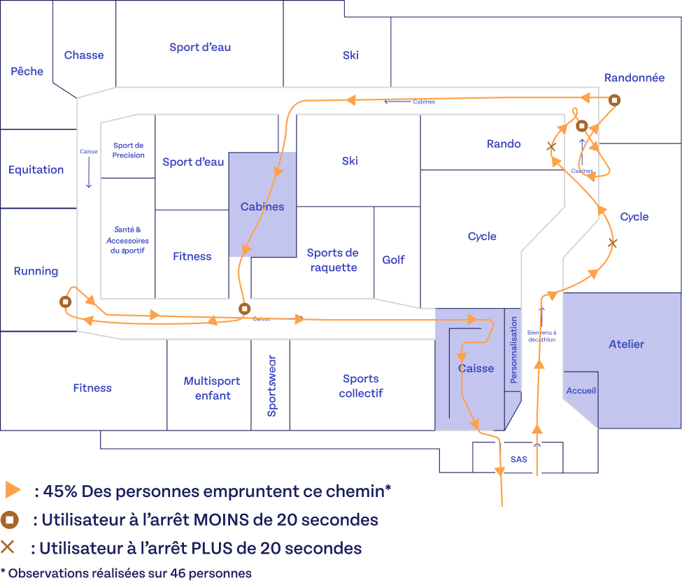
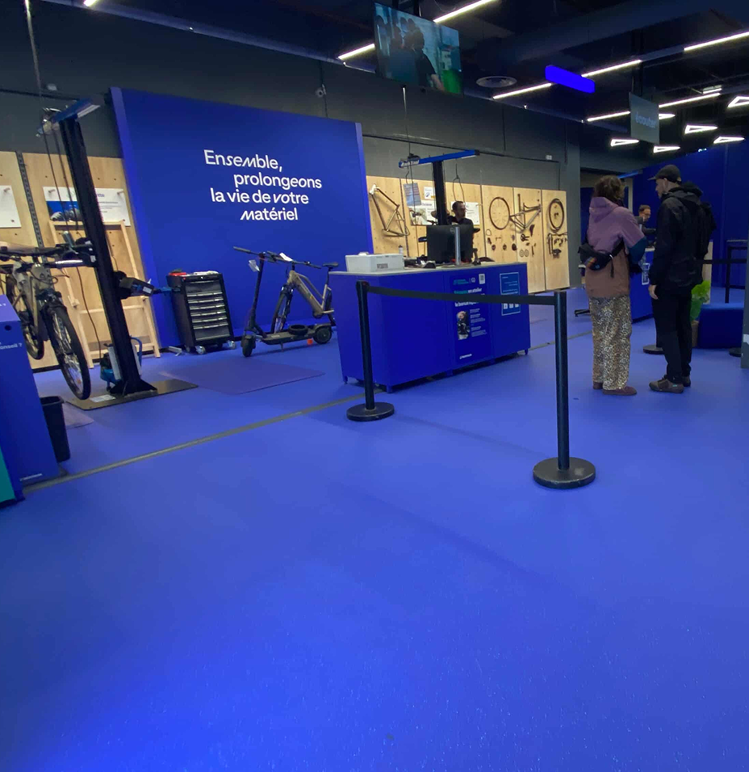
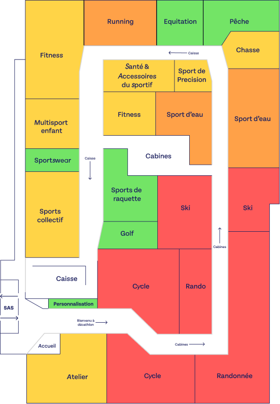
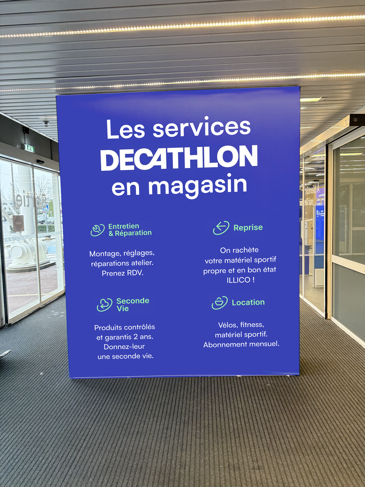
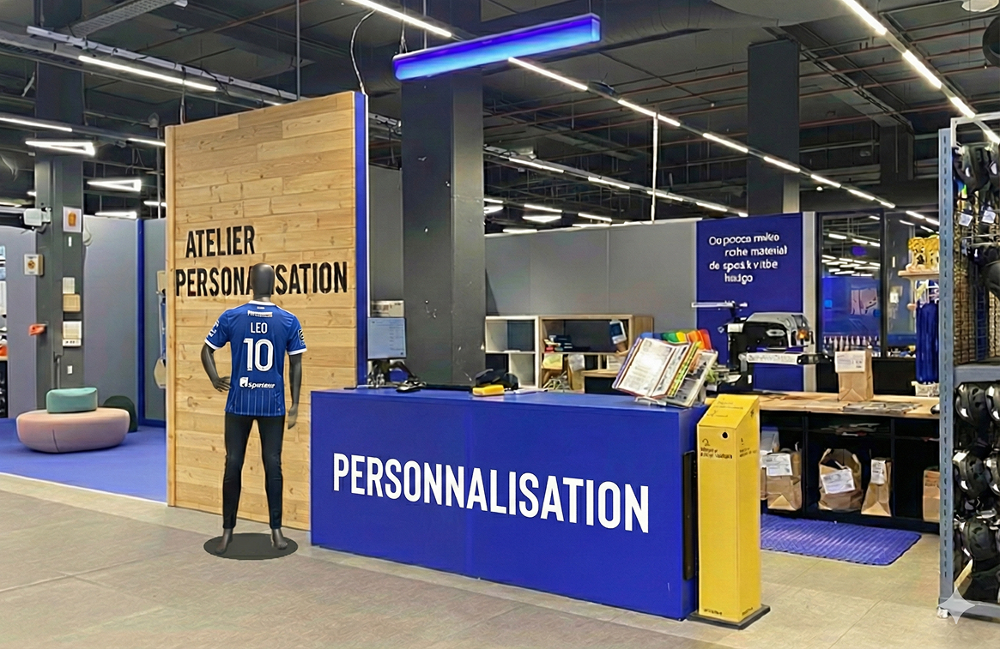
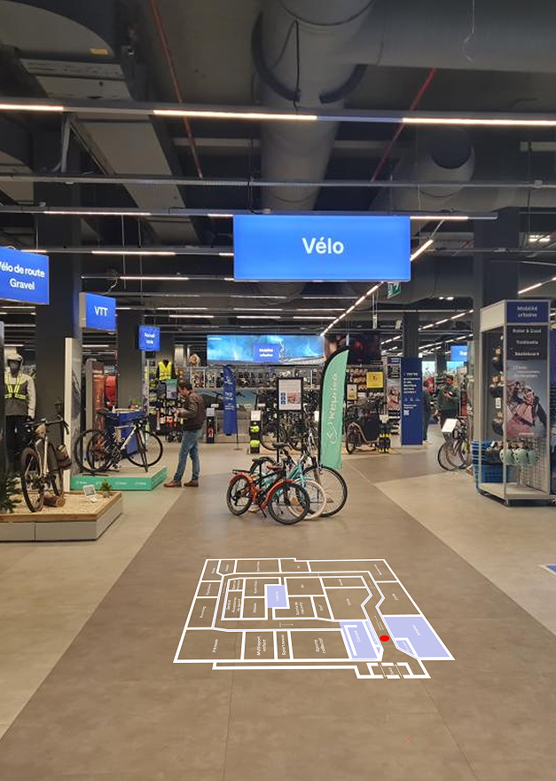
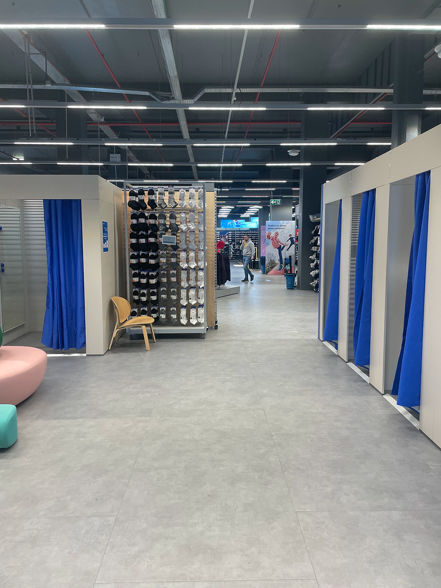

A real store, real customers, real friction 真实的商店，真实的顾客，真实的摩擦
Two days of immersive in-store observation 两天沉浸式店内观察
This field study was conducted over two days inside Decathlon Atlantis, Nantes, a large-format sports retail store. The goal was to move beyond assumptions and directly observe how customers navigate the space, interact with services, and experience the in-store journey. 这项实地研究历时两天，在南特 Decathlon Atlantis 大型运动零售商店中进行。目标是超越假设，直接观察顾客如何在空间中穿行、与服务互动以及体验店内购物旅程。
The project was a collaboration between L'École de Design Nantes Atlantique and Decathlon, with a team of 8 UX design students deployed simultaneously across the store. 该项目是南特大西洋设计学院与迪卡侬的合作成果，由 8 名 UX 设计专业学生同时部署在商店各处协作完成。
Who shops at Decathlon Atlantis? 谁在 Decathlon Atlantis 购物？

The store draws a broad, diverse clientele: families, students, young professionals, and occasional or regular sports practitioners. Located in the Atlantis retail zone near Nantes, it sees heavy footfall on weekends and during promotions. Customers generally seek accessible, functional products across a wide range of activities: from school equipment to outdoor, fitness, team sports, and urban mobility. 该商店吸引了广泛多元的顾客群体：家庭、学生、年轻职场人士，以及偶尔或定期参与运动的人群。商店位于南特附近的 Atlantis 零售区，周末及促销期间客流量大。顾客通常寻求覆盖多种活动的平价实用产品：从学习用品到户外、健身、团队运动和城市出行装备。
Four research questions 四个研究问题
This field study was structured around four key questions to guide our observations and analysis. 本次实地研究围绕四个核心问题展开，引导我们的观察与分析。
01: Entry SAS 01: 入口缓冲区
Entry SAS 入口缓冲区
How can the entry airlock be made more immersive and informative to encourage customers to stop and engage? 如何让入口缓冲区变得更具沉浸感和信息价值，从而促使顾客驻足互动？
02: Service Visibility 02: 服务可见性
Service Visibility 服务可见性
How can Decathlon better communicate its in-store services (financing, product trade-in, loyalty program) at the point of sale? 迪卡侬如何在销售现场更有效地传达其店内服务（分期付款、以旧换新、积分计划）？
03: Checkout Accessibility 03: 收银台可达性
Checkout Accessibility 收银台可达性
How can access to the checkouts be made smoother while still encouraging customers to explore the full store? 如何在鼓励顾客探索整个商店的同时，使通往收银台的路径更加顺畅？
04: Hot & Cold Zones 04: 冷热区域
Hot & Cold Zones 冷热区域
What are the actual customer flows throughout the store, and where are the high and low-traffic areas? 顾客在商店内的实际动线是怎样的？哪些区域客流量高，哪些区域客流量低？
How we ran the study 研究如何开展
7 simultaneous observation posts · 2 days · 46 customers tracked 7 个同步观察哨位 · 2 天 · 追踪 46 名顾客
The 7 simultaneous observation posts 7 个同步观察哨位
Global Overview A 全局概览 A
Full store surveillance from a fixed position covering half the store floor plan 从固定位置对商店半幅平面图进行全局监控
Global Overview B 全局概览 B
Full store surveillance covering the complementary half 覆盖互补另一半区域的全局监控
Full Tour Count 完整路线计数
Tracking and counting customers completing the full circular route 追踪并统计完成全程环形路线的顾客数量
Customer Interviews (×2) 顾客访谈（×2）
Short intercept interviews on purchase journey and in-store orientation 关于购物旅程和店内导向的简短拦截式访谈
Checkout Observation 收银台观察
Behavioral observation at and around the checkout area 收银台区域及周边的行为观察
Fitting Room Count 试衣间计数
Counting and tracking customers using the fitting rooms 统计并追踪使用试衣间的顾客
Methods: Customer counting by section at varied time slots · Discreet behavioral observation of movement and hesitation · Short intercept interviews · Zone-by-zone mapping of footfall data 方法：分时段分区域顾客计数 · 行动与犹豫行为的非介入式观察 · 简短拦截式访谈 · 各区域客流数据地图绘制

Terrain & Observations 实地观察
What we found on the ground 我们在实地发现了什么

Theme 01 主题 01
Entry SAS 入口缓冲区
First impressions: a zone of pure transition 第一印象：纯粹的过渡区域
The SAS is a zone of pure transition. Customers cross it in under 3 seconds with 0% information retention. The mannequin display generates no stopping behavior whatsoever. 缓冲区是一个纯粹的过渡区域。顾客在不到 3 秒内穿越，信息留存率为 0%。人台展示毫无停留效果。
- Decathlon offers several services (financing, product trade-in, loyalty program) but none are visible or identifiable at the point of entry 迪卡侬提供多项服务（分期付款、以旧换新、积分计划），但在入口处均无法被识别或发现
- The SAS functions as a transparent corridor, not a communication space 缓冲区作为透明通道运作，而非传播空间
- No visual break distinguishes the SAS from the rest of the store entry flow 没有视觉分隔将缓冲区与其余入口动线区别开来

Theme 02 主题 02
Customer Journey & Shortcuts 顾客动线与捷径
Key data: observed on 46 customers 关键数据：基于 46 名顾客的观察
45%
use fitting rooms as a shortcut (normal journey) 将试衣间用作捷径（正常路线）
35%
use the shortcut on a quicker journey 在更快路线上使用捷径
20%
complete the full intended circular route 完成迪卡侬预设的完整环形路线
- Customers frequently head toward workshops instead of checkouts 顾客经常走向工坊区而非收银台
- Many customers ask for directions to the checkouts, as they cannot find them independently 许多顾客询问收银台方向，因为他们无法独立找到
- Some customers, upon reaching the end of the circular route, turn back to the entrance because that's where they first saw the checkout signs 部分顾客走到环形路线尽头后原路返回入口，因为他们首先是在入口看到收银台指示牌的
- Shortcuts exist physically but not mentally: lack of affordance, no explicit signage, no visual hierarchy 捷径在物理上存在，但在大多数顾客的认知中并不存在：缺乏可供性、无明确指示、无视觉层级
- Only regular customers know how to use them 只有老顾客知道如何使用这些捷径
"Yes I know where it is, I come here often." 「是的，我知道在哪里，我经常来这里。」
"Wait, there's a shortcut?" 「等等，有捷径？」
"I'd rather do the full loop. I don't know where it leads." 「我宁愿走完整路线。我不知道捷径通向哪里。」
Strategic tension: Decathlon wants to encourage the full tour (maximum product exposure) while also offering customers a choice between exploration and efficiency. These two goals are currently in conflict. 战略张力：迪卡侬希望鼓励完整游览（最大化商品曝光）同时又想为顾客提供探索与效率之间的选择。这两个目标目前相互冲突。

Theme 03 主题 03
Services & Workshops 服务区与工坊
The "Information Desk" syndrome 「问询台」综合征
The Personalization workshop employee is overwhelmingly asked for orientation rather than personalization: "Where are the checkouts?", "Where's the exit?", "Where are the toilets?" Very few customers visit spontaneously for personalization services. The workshop functions as an improvised landmark, diverting from its actual purpose. 个性化工坊的员工被大量询问方向，而非个性化服务：「收银台在哪里？」「出口在哪里？」「洗手间在哪里？」很少有顾客主动光顾以寻求个性化服务。工坊充当了临时地标，偏离了其实际功能。
- The workshop area now groups three services: Seconde Vie (trade-in & resale), Personalization, and bike repair, previously scattered across the store 工坊区现集中三项服务：二次生命（以旧换新与二手销售）、个性化定制及自行车维修，此前这些服务分散于整个商店
- This consolidation lacks strong differentiating signage 此次整合缺乏强有力的差异化标识
- The Personalization workshop and Reception area are visually identical (same blue, same layout), creating confusion 个性化工坊与接待区在视觉上完全相同（相同的蓝色、相同的布局），造成混淆
- Samples and explainers are present but not visible enough when passing by 样品和说明材料虽有摆放，但路过时可见度不足
- The large floor plan on display is being used by lost customers as a navigation point, sending them to the workshop instead of reception 展示的大型平面图被迷路顾客当作导航参考，结果把他们引向工坊而非接待台
Consequence: Loss of staff productivity · Implicit devaluation of the service · Dilution of customer understanding of what is actually offered 后果：员工生产力损耗 · 服务隐性贬值 · 顾客对实际服务内容的理解被稀释

Theme 04 主题 04
Hot & Cold Zones 冷热区域分布
Findings: Tuesday, 10:30–15:45, 46 observed customers 研究发现：周二，10:30–15:45，观察 46 名顾客
Mapping real customer flows to understand circulation patterns, main axes of traffic, concentration points and stops, and the impact of spatial organization on customer experience. 绘制真实顾客动线，以了解循环模式、主要流量轴线、聚集点和停留点，以及空间组织对顾客体验的影响。
Cycle, Rando, Fitness, Team Sports, Workshop zone 自行车、徒步、健身、集体运动、工坊区
Running, Sportswear, Ski 跑步、运动服装、滑雪
Water Sports, Equestrian, Racket Sports, Golf 水上运动、马术、球拍运动、高尔夫
Fishing, Hunting, Entry SAS, Personalization 钓鱼、狩猎、入口缓冲区、个性化定制
Key insight: The central aisle creates a "highway effect": high traffic volume but virtually no stopping behavior. Back sections see immediate desertification once customers pass the first few aisles. 关键洞察：中央通道产生「高速公路效应」：客流量大但几乎没有停留行为。顾客一旦穿过前几排货架，后部区域便立即出现冷清化现象。
Bonus Observation 附加观察
Call Terminals: a good idea, poorly executed 呼叫终端：好主意，执行不佳
The terminals exist. Customers appreciate the concept. The execution undermines it. 终端存在。顾客欣赏这个概念。但执行方式削弱了它的效果。
What works 有效之处
- Customers appreciate being able to call a staff member without having to search the floor 顾客欣赏能够呼叫员工而无需在楼层寻找的便利
- Staff confirm it facilitates contact 员工确认它有助于建立联系
- It filters simple requests effectively 能有效过滤简单的请求
What doesn't work 失效之处
- Store-wide announcement → sonic fatigue from repetition 全店广播 → 重复播放导致声音疲劳
- Terminals are the same blue as the Decathlon environment, blending in and going unnoticed by many customers 终端与迪卡侬环境色调相同，与背景融为一体，被许多顾客忽视
What the data tells us 数据告诉我们什么
Four higher-level takeaways synthesized from the observations 从观察中提炼的四个高层次洞察
01
The store communicates by product, not by service 商店以商品为中心传播，而非服务
Decathlon's spatial organization is optimized for product discovery but not for service visibility. Services exist, but they are invisible to first-time visitors. The SAS, which is the one guaranteed moment of capture, is completely wasted. 迪卡侬的空间组织针对商品发现进行了优化，但未顾及服务可见性。服务确实存在，但对于初次到访的顾客而言，它们是不可见的。缓冲区作为唯一有保障的捕获时刻，被完全浪费。
02
The wayfinding system overloads staff 导视系统使员工超载
In the absence of clear signage, customers systematically offload their orientation needs onto available employees, regardless of that employee's actual role. Staff spend time on orientation rather than service, which further reduces the visibility of the services they're supposed to promote. 在缺乏清晰标识的情况下，顾客系统性地将导向需求转嫁给在场员工，无论该员工实际扮演何种角色。员工将时间花在引导方向上而非提供服务，进一步降低了他们本应推广的服务的可见度。
03
Shortcuts exist but have no mental model 捷径存在，但没有认知模型
The physical infrastructure for shortcuts is already in place. The barrier is cognitive: customers don't understand the shortcuts exist, don't trust them, and don't use them. This is a classic affordance problem, not a layout problem. 捷径的物理基础设施已到位。障碍在于认知层面：顾客不知道捷径的存在，不信任它们，也不使用它们。这是一个经典的可供性问题，而非布局问题。
04
The circular route creates a paradox 环形路线制造了悖论
The full-tour route is designed to maximize exposure. But when customers don't understand it, it becomes a source of frustration and confusion, especially around checkouts. 80% of customers abandon or shortcut the intended route. 完整游览路线的设计旨在最大化商品曝光。但当顾客无法理解它时，它就成为挫败感和困惑的来源，尤其是在收银台附近。80% 的顾客放弃或抄近路绕过了预设路线。
Recommendations 设计建议
Design directions 设计方向

Recommendation 01 建议 01
Rethink the Entry SAS 重新构想入口缓冲区
Transform the SAS from a transition corridor into a genuine communication space 将缓冲区从过渡走廊转变为真正的传播空间
- Use the SAS to communicate services from the very first moment of entry (financing, loyalty, trade-in) 从进入的第一刻起，利用缓冲区传达服务信息（分期付款、积分计划、以旧换新）
- Create a visual break that signals "you are now inside Decathlon", not just a passage 创建视觉分界，传递「您已进入迪卡侬」的信号，而非仅仅是一条通道
- Consider immersive elements that give customers a reason to stop, even briefly 考虑加入沉浸式元素，给顾客一个短暂驻足的理由

Recommendation 02 建议 02
Make Services Visible and Distinct 让服务清晰可见且各具特色
Differentiate each service area so customers can identify them independently 从视觉上区分每个服务区域，使顾客能够独立识别
- Strong differentiated signage for each workshop function (Personalization ≠ Reception ≠ Atelier) 为每项工坊功能设置强有力的差异化标识（个性化定制 ≠ 接待台 ≠ 维修工坊）
- Promote services actively: don't rely on passive discovery 主动推广服务：不要依赖被动发现
- Make samples and service explainers visible from passing traffic, not just up close 确保样品和服务说明在路过时即可看见，而非仅限近距离
- Represent each service distinctly on the store map 在商店平面图上清晰区分每项服务

Recommendation 03 建议 03
Improve Checkout Wayfinding 改善收银台导视系统
Help customers find checkouts without disrupting the store's circular logic 帮助顾客找到收银台，同时不破坏商店的环形逻辑
- More iconographic floor signage: fewer words, more pictograms 更多图形化地面标识：少文字，多图标
- Additional store maps placed at strategic points along the route 沿路线在战略节点增设商店平面图
- Represent checkouts distinctly on the map: make it clear they are only accessible from the end of the circular route 在地图上清晰标注收银台：明确说明只能从环形路线终点到达
- Micro-signage along aisles: "Quick access to checkouts →" 沿货架设置微型指示牌：「快速通往收银台 →」
- Mention shortcuts on the entrance map and in the Decathlon app 在入口平面图和迪卡侬应用程序中标注捷径
- Inspiration: IKEA's directional floor marking system 灵感来源：宜家的地面导向标识系统

Recommendation 04 建议 04
Activate the Fitting Room Zone 激活试衣间区域
Turn a friction point into a service touchpoint 将摩擦点转变为服务触点
- Install a price/stock self-service terminal to let customers check size availability and pricing independently 安装价格/库存自助查询终端，让顾客独立查询尺码可用性和价格
- Reinforce floor signage visible from main aisles (larger pictograms, clearer indication from multiple points along the route) 加强从主通道可见的地面标识（更大图标，从路线多个节点提供更清晰的指引）
- After fitting: provide clear directional guidance to the next step (checkout / back to aisle / exit) 试衣后：提供明确的下一步方向指引（收银台 / 返回货架 / 出口）
+ Fix the Call Terminals: + 改进呼叫终端：
- Localize notifications to the relevant zone only: remove store-wide announcements 将通知限定于相关区域：取消全店广播
- Use a visually distinct color that breaks from the all-blue Decathlon palette 使用视觉上突出的颜色，打破迪卡侬全蓝色调
- Less noise, more clarity, same efficiency 更少噪音，更多清晰度，同等效率
Key Learnings 关键收获
- Two days of field observation taught me more about wayfinding than any textbook could. Watching real customers get lost and navigate the space revealed friction points invisible in a lab setting. 两天的实地观察让我对空间导视的理解远超书本，看着真实顾客迷路、摸索前行，揭示了实验室中看不到的摩擦点。
- Good signage is invisible when it works — customers only notice it when it fails. Designing for orientation means designing for moments of confusion, not moments of clarity. 好的标识系统在有效时是隐形的——只有失败时人们才会注意到它。为定向导航设计意味着为困惑的时刻而设计。
- Coordinating a team across 7 simultaneous observation posts required rigorous planning. The research protocol itself was as much a design challenge as the final recommendations. 在7个同步观察点协调团队工作，需要严格规划——研究协议本身也是一项设计挑战。